library(ggplot2)
library(dplyr)
# Dane makroekonomiczne — używamy przez cały rozdział
dane <- data.frame(
rok = 2015:2024,
PKB = c(1800, 1862, 1984, 2120, 2292, 2330, 2625, 2780, 2900, 3070),
inflacja = c(2.1, 1.3, -0.6, 1.6, 1.8, 2.3, 5.1, 14.4, 11.4, 3.6),
bezrobocie = c(7.5, 6.2, 5.5, 4.9, 3.8, 3.3, 5.6, 3.4, 2.9, 2.8)
)
wydatki <- data.frame(
kategoria = c("Edukacja", "Zdrowie", "Obrona",
"Transport", "Kultura", "Administracja"),
procent_PKB = c(5.0, 4.8, 2.4, 1.9, 0.7, 2.1),
region = c("Społeczne", "Społeczne", "Obrona",
"Infrastruktura", "Społeczne", "Administracja")
)9 Anatomia wykresu — dostosowywanie w ggplot2 i matplotlib
Tworzenie wykresu to nie tylko wybór jego typu — to seria decyzji o tym jak dane mają być zaprezentowane. W tym rozdziale nauczymy się świadomie kontrolować każdy element wykresu: od tytułu, przez osie i kolory, aż po adnotacje i linie referencyjne.
NoteFilozofia obu bibliotek
ggplot2 (R) buduje wykres warstwami — każdy element dokładasz operatorem +. Masz gotowy wykres? Dodajesz tytuł, potem formatujesz osie, potem kolory. Kolejność warstw jest elastyczna.
matplotlib (Python) działa na obiekcie wykresu — tworzysz obiekty fig i ax, a potem wywołujesz metody na obiekcie ax. To jak praca z dokumentem: najpierw tworzysz stronę, potem piszesz na niej.
W obu przypadkach używamy tych samych danych przez cały rozdział — upraszcza to porównanie składni.
#| label: setup-py
import matplotlib.pyplot as plt
import matplotlib.ticker as mticker
import numpy as np
import pandas as pd
# Dane makroekonomiczne — używamy przez cały rozdział
dane = pd.DataFrame({
"rok": list(range(2015, 2025)),
"PKB": [1800, 1862, 1984, 2120, 2292, 2330, 2625, 2780, 2900, 3070],
"inflacja": [2.1, 1.3, -0.6, 1.6, 1.8, 2.3, 5.1, 14.4, 11.4, 3.6],
"bezrobocie": [7.5, 6.2, 5.5, 4.9, 3.8, 3.3, 5.6, 3.4, 2.9, 2.8]
})
wydatki = pd.DataFrame({
"kategoria": ["Edukacja", "Zdrowie", "Obrona",
"Transport", "Kultura", "Administracja"],
"procent_PKB": [5.0, 4.8, 2.4, 1.9, 0.7, 2.1],
"region": ["Społeczne", "Społeczne", "Obrona",
"Infrastruktura", "Społeczne", "Administracja"]
})9.1 Motyw ogólny — styl bazowy
Pierwsza decyzja przed jakimkolwiek dostosowywaniem szczegółów: jaki jest ogólny styl wykresu? Motyw (theme) ustawia domyślne tło, siatkę, czcionki i kolory naraz — jednym poleceniem. Kązdy motyw jest zbiorem ustawień dla wszystkich elementów wykresu, które można potem modyfikować pojedynczo. Wybór motywu to jak wybór szablonu — nadaje ton całemu wykresowi.
# Dostępne motywy w ggplot2 — porównanie
p_base <- ggplot(dane, aes(x = rok, y = inflacja)) +
geom_line(linewidth = 1.2, color = "steelblue") +
geom_point(size = 2.5, color = "steelblue") +
labs(title = "Inflacja w Polsce", y = "Inflacja (%)", x = "Rok")
# Cztery najpopularniejsze motywy
p_base + theme_gray() # domyślny — szare tło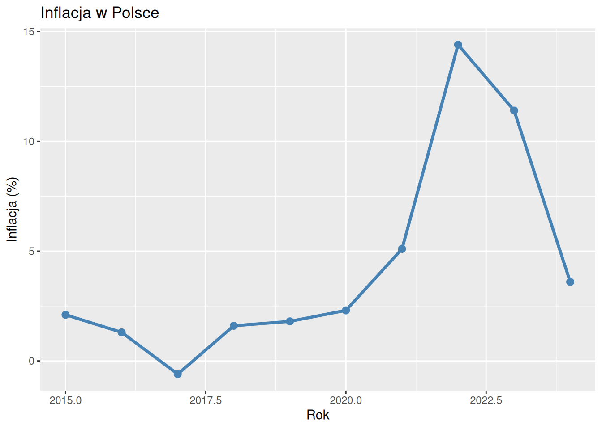
p_base + theme_minimal() # minimalistyczny — bez tła, delikatna siatka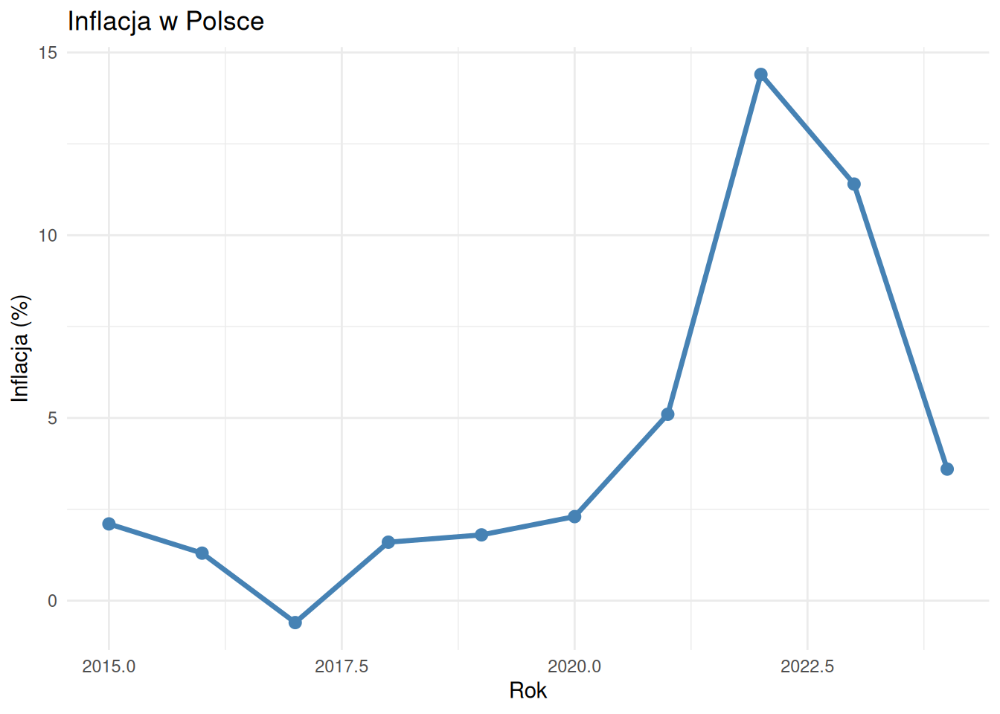
p_base + theme_bw() # czarno-biały — dobre do druku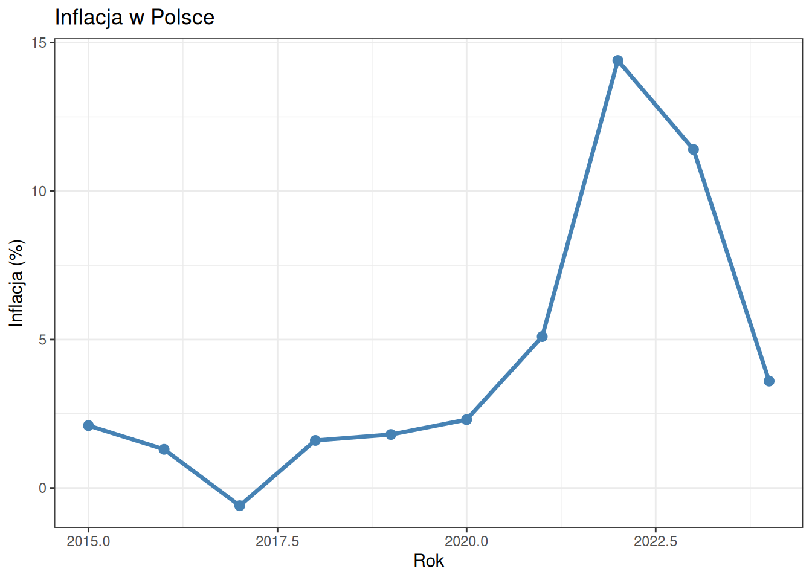
p_base + theme_classic() # klasyczny — bez siatki, tylko osie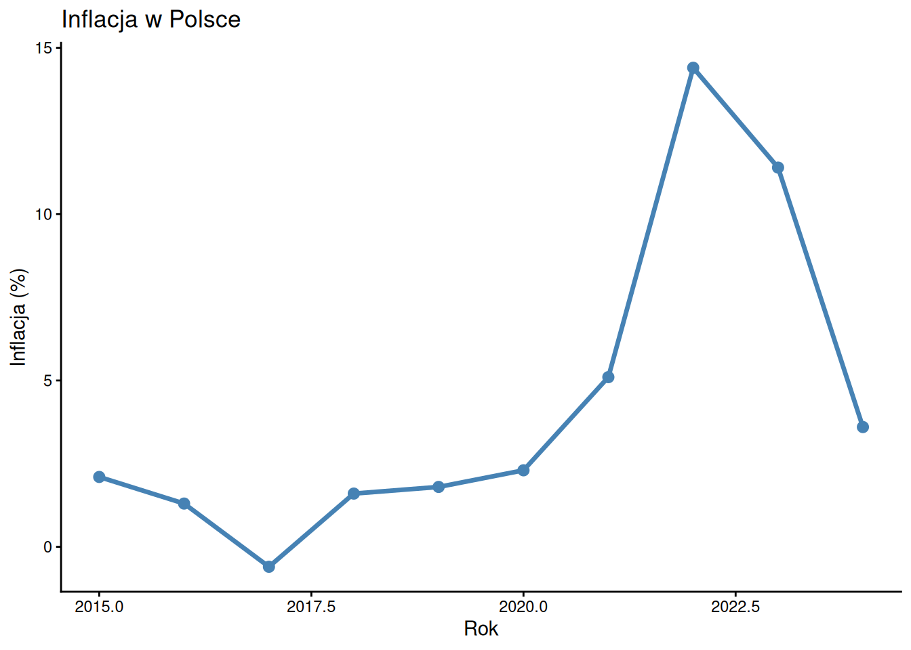
Tip
Rekomendacja dla raportów ekonomicznych: theme_minimal() — czytelny, nowoczesny, dobrze wygląda zarówno na ekranie jak i w druku. Możesz ustawić go globalnie dla całego dokumentu:
theme_set(theme_minimal()) # wpisz raz na początku skryptuPo wybraniu motywu możliwa jest jego modyfikacja — każdy element można dostosować do swoich potrzeb. Funkcja theme() pozwala na precyzyjną kontrolę nad wyglądem tytułów (plot.[...]), osi (axis.[...]), siatki (panel.[...]) i innych elementów. Możesz zmieniać rozmiar, krój, kolor czcionki, a także decydować o tym które linie siatki mają być widoczne. Aby przekazać informację o tym, że chcesz zmodyfikować tytuł, używasz plot.title, a do formatowania czcionki tytułu używasz element_text(), gdzie możesz ustawić size, face (np. “bold”), color i inne właściwości. W celu usunięnięcia jakiegoś elementu (np. pomocniczej siatki) wystarczy ustawić go na element_blank().
# Modyfikacja elementów motywu — funkcja theme()
ggplot(dane, aes(x = rok, y = inflacja)) +
geom_line(linewidth = 1.2, color = "steelblue") +
geom_point(size = 2.5, color = "steelblue") +
labs(title = "Inflacja w Polsce", y = "Inflacja (%)", x = "Rok") +
theme_minimal() +
theme(
plot.title = element_text(size = 14, face = "bold"),
axis.title = element_text(size = 11),
axis.text = element_text(size = 9),
panel.grid.minor = element_blank() # usuń pomocniczą siatkę
)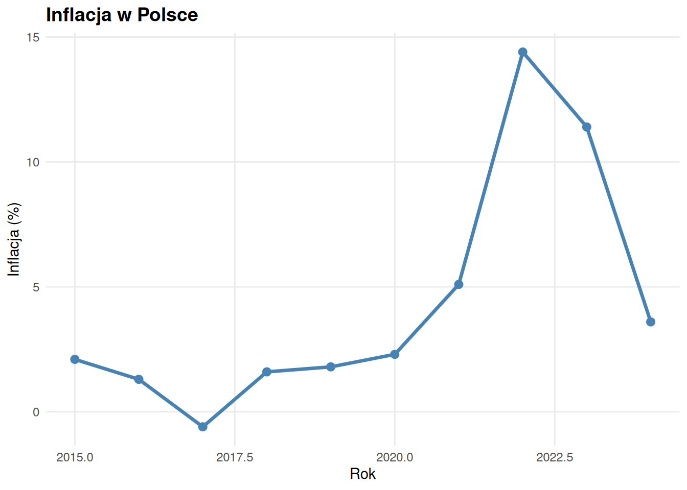
# Dostępne style w matplotlib
import matplotlib.style as mstyle
print(plt.style.available) # pełna lista dostępnych stylów# Cztery popularne style
for styl in ["default", "seaborn-v0_8-whitegrid",
"Solarize_Light2", "ggplot"]:
# Ustaw styl dla tego wykresu
plt.style.use(styl)
fig, ax = plt.subplots(figsize=(5, 3))
ax.plot(dane["rok"], dane["inflacja"],
linewidth=1.5, color="steelblue", marker="o", markersize=4)
ax.set_title(f"Styl: {styl}", fontsize=10)
ax.set_xlabel("Rok"); ax.set_ylabel("Inflacja (%)")
plt.tight_layout()
plt.show()
# Przywróć domyślny styl po wyświetleniu wykresu, aby upewnić się, że następny wykres będzie miał swój własny styl
plt.style.use('default')
Tip
Rekomendacja dla raportów ekonomicznych: seaborn-v0_8-whitegrid lub ustawienie stylu przez seaborn:
import seaborn as sns
sns.set_style("whitegrid") # wpisz raz na początku skryptu
sns.set_context("notebook") # rozmiar elementów: paper / notebook / talk / poster# Modyfikacja konkretnych elementów
import seaborn as sns
sns.set_style("whitegrid")
fig, ax = plt.subplots(figsize=(8, 4))
ax.plot(dane["rok"], dane["inflacja"],
linewidth=1.5, color="steelblue", marker="o", markersize=5)
# Czcionki i rozmiary
ax.title.set_fontsize(14); ax.title.set_fontweight("bold")
ax.xaxis.label.set_fontsize(11)
ax.yaxis.label.set_fontsize(11)
ax.tick_params(labelsize=9)
# Usuń pomocniczą siatkę
ax.yaxis.set_minor_locator(mticker.AutoMinorLocator())
ax.grid(which="minor", visible=False)
ax.set_title("Inflacja w Polsce")
ax.set_xlabel("Rok"); ax.set_ylabel("Inflacja (%)")
plt.tight_layout(); plt.show()9.2 Tytuł, podtytuł i stopka
Każdy wykres w raporcie ekonomicznym powinien mieć tytuł, a stopka to dobre miejsce na podanie źródła danych — wymóg rzetelności naukowej.
Zauważ, że tytuł, podtytuł i stopka to trzy oddzielne elementy — każdy można formatować niezależnie. Tytuł przyciąga uwagę, podtytuł dodaje kontekst, a stopka dostarcza informacji o źródle danych i dacie pobrania. Dobrze sformatowane tytuły i stopki zwiększają wiarygodność i zrozumienie wykresu, a także ułatwiają jego interpretację bez konieczności odwoływania się do tekstu raportu.
Do formatowania tytułu, podtytułu i stopki używamy tej samej funkcji (theme()) — to pokazuje jak elastyczny jest system warstwowy ggplot2. Funkcja theme() posiada osobne parametry do formatowania elementów opisujących wykres, ich nazwy są intuicyjne: plot.title, plot.subtitle, plot.caption — każdy z nich odpowiada za inny tekst na wykresie. Wprowadzenie konkretnych ustawień odbywa się za pomocą element_text(), gdzie można kontrolować rozmiar, krój, kolor i inne właściwości czcionki.
ggplot(dane, aes(x = rok, y = inflacja)) +
geom_line(linewidth = 1.2, color = "steelblue") +
geom_point(size = 2.5, color = "steelblue") +
labs(
title = "Inflacja w Polsce w latach 2015–2024",
subtitle = "Roczna zmiana cen towarów i usług konsumpcyjnych (CPI)",
caption = "Źródło: GUS, Bank Danych Lokalnych | Dane pobrano: 2024-12",
x = "Rok",
y = "Inflacja (%, r/r)"
) +
theme_minimal() +
theme(
plot.title = element_text(size = 14, face = "bold", hjust = 0),
plot.subtitle = element_text(size = 10, color = "gray40", hjust = 0),
plot.caption = element_text(size = 8, color = "gray50", hjust = 1)
)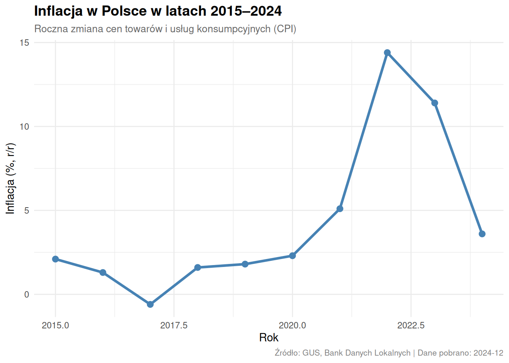
Note
hjust = 0 wyrównuje do lewej, hjust = 0.5 centruje, hjust = 1 do prawej.
Biblioteka matplotlib nie posiada dedykowanych argumentów dla tytułu, podtytułu i stopki, ale można je łatwo dodać za pomocą metod set_title() i text(). Tytuł jest dodawany bezpośrednio do osi (ax.set_title()), a podtytuł i stopka są umieszczane jako tekst na wykresie (ax.text()) z odpowiednimi współrzędnymi. Formatowanie odbywa się przez ustawienia czcionki i położenia tekstu.
sns.set_style("whitegrid")
fig, ax = plt.subplots(figsize=(9, 5))
ax.plot(dane["rok"], dane["inflacja"],
linewidth=1.5, color="steelblue", marker="o", markersize=5)
# Tytuł i podtytuł — dwa oddzielne wywołania text/title
ax.set_title(
"Inflacja w Polsce w latach 2015–2024",
fontsize=14, fontweight="bold", loc="left", pad=20
)
# Podtytuł — dodany jako tekst nad wykresem
ax.text(0, 1.02,
"Roczna zmiana cen towarów i usług konsumpcyjnych (CPI)",
transform=ax.transAxes, fontsize=10, color="gray",
va="bottom", ha="left")
# Stopka — poniżej wykresu
fig.text(0.99, -0.02,
"Źródło: GUS, Bank Danych Lokalnych | Dane pobrano: 2024-12",
ha="right", va="top", fontsize=8, color="gray")
ax.set_xlabel("Rok", fontsize=11)
ax.set_ylabel("Inflacja (%, r/r)", fontsize=11)
plt.tight_layout()
plt.show()9.3 Etykiety osi i legenda
Jezeli tylko w procesie mapowania danych do estetyk (aes()) przypiszesz zmienną do color lub linetype, ggplot2 automatycznie wygeneruje legendę. Jednak domyślne etykiety mogą być nieczytelne (np. nazwy zmiennych) — warto je dostosować, aby były zrozumiałe dla odbiorcy. W tym celu używamy funkcji scale_color_manual() i scale_linetype_manual(), gdzie możemy przypisać konkretne kolory i typy linii do wartości zmiennej, a także ustawić czytelne etykiety w legendzie. Kluczową zasadą jest to, że tytuł legendy (np. “Wskaźnik”) musi być taki sam dla obu estetyk (color i linetype), aby były one połączone w jedną legendę. Do kontrolowania pozycji i wyglądu legendy służy funkcja theme(), gdzie można ustawić legend.position (np. “bottom”, “top”, “left”, “right”) oraz formatowanie tekstu i tła legendy.
library(tidyr)
# Dane w formacie długim — dwie linie
dane_dlugi <- dane |>
select(rok, inflacja, bezrobocie) |>
pivot_longer(-rok, names_to = "wskaznik", values_to = "wartosc")
ggplot(dane_dlugi, aes(x = rok, y = wartosc,
color = wskaznik, linetype = wskaznik)) +
geom_line(linewidth = 1.2) +
geom_point(size = 2.5) +
labs(
x = "Rok",
y = "Wartość (%)",
color = "Wskaźnik", # tytuł legendy (kolor)
linetype = "Wskaźnik" # tytuł legendy (typ linii) — musi być taki sam!
) +
scale_color_manual(
values = c("inflacja" = "#d62728", "bezrobocie" = "#1f77b4"),
labels = c("inflacja" = "Inflacja CPI (%)", "bezrobocie" = "Stopa bezrobocia (%)")
) +
scale_linetype_manual(
values = c("inflacja" = "solid", "bezrobocie" = "dashed"),
labels = c("inflacja" = "Inflacja CPI (%)", "bezrobocie" = "Stopa bezrobocia (%)")
) +
theme_minimal() #+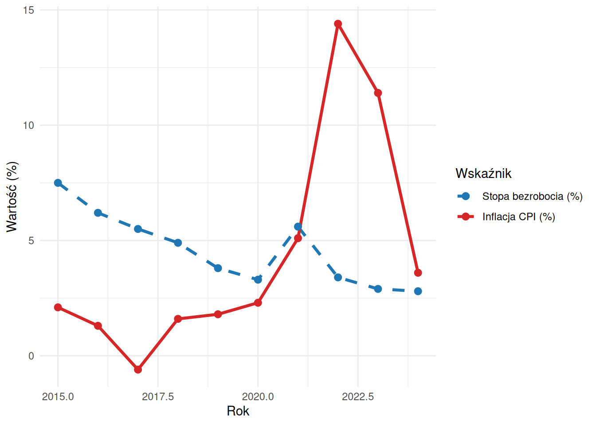
# theme(
# legend.position = "bottom", # bottom / top / left / right
# legend.title = element_text(face = "bold"),
# legend.background = element_rect(fill = "white", color = "gray80")
# )# Usunięcie legendy gdy jest zbędna
ggplot(dane, aes(x = rok, y = inflacja)) +
geom_line(color = "steelblue", linewidth = 1.2) +
labs(title = "Inflacja w Polsce") +
theme_minimal() +
theme(legend.position = "none") # ukryj legendęfig, ax = plt.subplots(figsize=(9, 5))
ax.plot(dane["rok"], dane["inflacja"],
color="#d62728", linewidth=1.5, linestyle="solid",
marker="o", markersize=5,
label="Inflacja CPI (%)")
ax.plot(dane["rok"], dane["bezrobocie"],
color="#1f77b4", linewidth=1.5, linestyle="dashed",
marker="s", markersize=5,
label="Stopa bezrobocia (%)")
ax.set_xlabel("Rok", fontsize=11)
ax.set_ylabel("Wartość (%)", fontsize=11)
# Legenda — pozycja i styl
leg = ax.legend(
title = "Wskaźnik",
title_fontsize = 10,
fontsize = 9,
loc = "upper right", # upper/lower + left/center/right
frameon = True,
framealpha = 0.9,
edgecolor = "gray"
)
leg.get_title().set_fontweight("bold")
# Usunięcie legendy gdy zbędna:
# ax.legend().remove() lub przy rysowaniu: ax.plot(...) bez label=
sns.set_style("whitegrid")
plt.tight_layout(); plt.show()9.4 Skale osi
Skala osi to jedna z najważniejszych decyzji wizualizacyjnych — wpływa na to jak odbiorca postrzega zmiany i różnice w danych.
Zakres i podziałka osi
Skala osi to zakres wartości, które są wyświetlane, oraz rozmieszczenie znaczników (ticks, breaks). Dobrze dobrana skala podkreśla ważne różnice i trendy, źle dobrana może zniekształcić przekaz. Kontrola skali odbywa się przez ustawienia breaks (znaczniki główne) i minor_breaks (znaczniki pomocnicze) w funkcjach scale_x_continuous() i scale_y_continuous(). Możesz ustawić konkretne wartości dla znaczników, a także ich formatowanie (np. dodanie jednostek). Dodatkowo, ustawienie limits pozwala na kontrolę zakresu osi — możesz zdecydować, czy oś ma zaczynać się od zera, czy może od wartości minimalnej danych (jednak to ustawienie należy uzywać rozważnie, aby nie manipulować percepcją odbiorcy).
ggplot(dane, aes(x = rok, y = inflacja)) +
geom_line(color = "steelblue", linewidth = 1.2) +
geom_point(color = "steelblue", size = 2.5) +
# Oś X — tylko lata z danych, co 2 lata
scale_x_continuous(
breaks = seq(2015, 2024, by = 2),
limits = c(2015, 2024)
) +
# Oś Y — zakres, znaczniki osi (ticks) co 2 pp, formatowanie
scale_y_continuous(
breaks = seq(-2, 16, by = 2),
limits = c(-2, 16),
labels = scales::label_number(suffix = "%") # dodaj % do etykiet
) +
labs(title = "Inflacja w Polsce", x = "Rok", y = NULL) +
theme_minimal()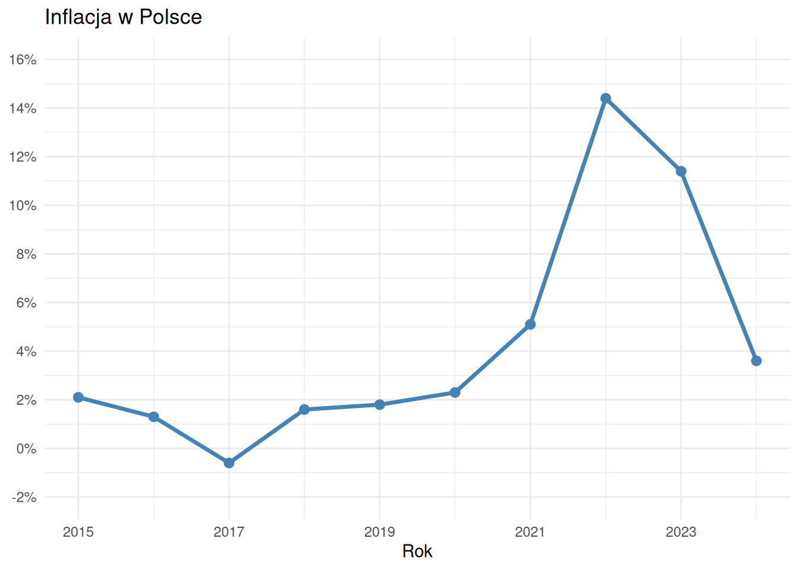
# Formatowanie etykiet — przydatne funkcje z pakietu scales
library(scales)
ggplot(dane, aes(x = rok, y = PKB)) +
geom_line(color = "steelblue", linewidth = 1.2) +
scale_y_continuous(
labels = label_number(big.mark = " ", # separator tysięcy
suffix = " mld PLN")
) +
labs(title = "PKB Polski", x = "Rok", y = NULL) +
theme_minimal()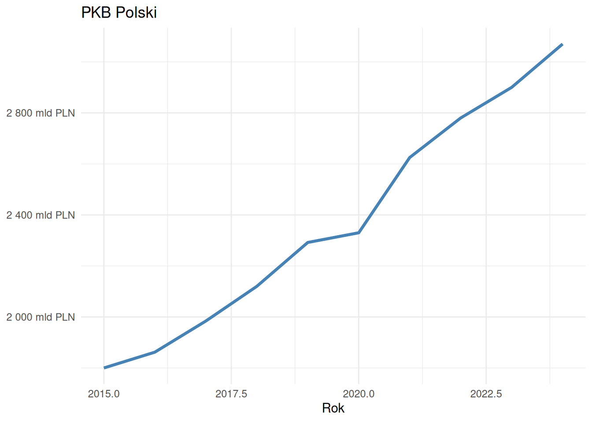
fig, axes = plt.subplots(1, 2, figsize=(10, 4))
sns.set_style("whitegrid")
# Oś X — znaczniki osi (ticks) i zakres
axes[0].plot(dane["rok"], dane["inflacja"],
color="steelblue", linewidth=1.5, marker="o", markersize=4)
axes[0].set_xlim(2015, 2024)
axes[0].set_ylim(-2, 16)
axes[0].set_xticks(range(2015, 2025, 2)) # znaczniki co 2 lata
axes[0].set_yticks(range(-2, 17, 2))
axes[0].set_title("Kontrola znaczników")
# Formatowanie etykiet — dodanie jednostek
axes[1].plot(dane["rok"], dane["PKB"],
color="steelblue", linewidth=1.5, marker="o", markersize=4)
# Formatter dla dużych liczb — separator tysięcy + jednostka
def fmt_pkb(x, pos):
return f"{x:,.0f}\nmld PLN".replace(",", " ")
axes[1].yaxis.set_major_formatter(mticker.FuncFormatter(fmt_pkb))
axes[1].set_xticks(range(2015, 2025, 2))
axes[1].set_title("Formatowanie etykiet osi")
plt.tight_layout(); plt.show()
ImportantRotacja etykiet osi — częsty błąd wizualizacji
Rotacja etykiet osi X (pod kątem 45° lub 90°) jest pozornym rozwiązaniem problemu czytelności — tekst pochylony czyta się wolniej, a tekst pionowy wymaga przekręcenia głowy. Rotacja maskuje problem zamiast go rozwiązywać.
Właściwe rozwiązania gdy etykiety są zbyt długie lub gęste:
- Skróty i kody — zamiast pełnych nazw kategorii używaj skrótów (“Administracja” → “Adm.”) lub kodów (nazwy krajów → ISO: “Polska” → “PL”)
- Obrót całego wykresu —
coord_flip()(R) /barh()(Python) — poziomy wykres słupkowy to naturalne rozwiązanie dla długich etykiet kategorii - Rzadsze ticki — nie każdy punkt musi być opisany; dla szeregów czasowych co 2–5 lat często w zupełności wystarczy
- Bezpośrednie etykietowanie — opisz linie lub słupki bezpośrednio zamiast polegać na gęstej osi lub legendzie
- Zmiana skali lub agregacja — węższa oś czasu, kwartały zamiast miesięcy, regiony zamiast województw
Skala logarytmiczna
NoteKiedy używać skali logarytmicznej?
Skala logarytmiczna jest właściwa gdy:
- dane obejmują wiele rzędów wielkości (np. PKB różnych krajów: od 10 mld do 20 bilionów USD),
- interesuje Cię tempo wzrostu (zmiana procentowa), a nie zmiana bezwzględna,
- rozkład danych jest silnie prawostronnie skośny (typowe dla dochodów, cen aktywów).
Na skali log równe odległości = równe tempo zmiany (np. +10% zawsze wygląda tak samo).
Przekształcenie osi na logarytmiczną w ggplot2 odbywa się przez ustawienie scale_y_log10() (lub scale_x_log10()) — to automatycznie zmienia skalę i dostosowuje etykiety. Na skali logarytmicznej równe odległości odpowiadają równym procentowym zmianom, co jest idealne do analizy tempa wzrostu. Dodatkowo, można dostosować formatowanie etykiet, aby były czytelne (np. dodając jednostki lub używając separatora tysięcy).
# Porównanie: skala liniowa vs logarytmiczna
library(patchwork)
p_lin <- ggplot(dane, aes(x = rok, y = PKB)) +
geom_line(color = "steelblue", linewidth = 1.2) +
geom_point(color = "steelblue", size = 2.5) +
labs(title = "Skala liniowa", y = "PKB (mld PLN)") +
theme_minimal()
p_log <- ggplot(dane, aes(x = rok, y = PKB)) +
geom_line(color = "#d62728", linewidth = 1.2) +
geom_point(color = "#d62728", size = 2.5) +
scale_y_log10(
labels = scales::label_number(big.mark = " ")
) +
labs(title = "Skala logarytmiczna (log10)",
y = "PKB (mld PLN, skala log)") +
theme_minimal()
p_lin | p_log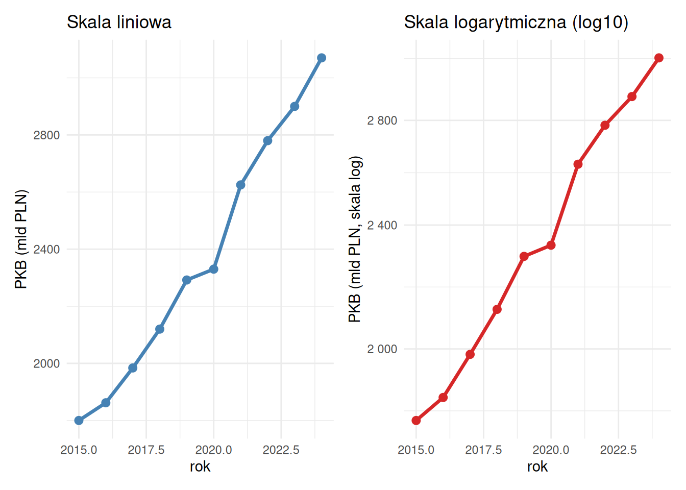
fig, axes = plt.subplots(1, 2, figsize=(10, 4))
sns.set_style("whitegrid")
# Skala liniowa
axes[0].plot(dane["rok"], dane["PKB"],
color="steelblue", linewidth=1.5, marker="o", markersize=4)
axes[0].set_title("Skala liniowa")
axes[0].set_ylabel("PKB (mld PLN)")
axes[0].set_xticks(range(2015, 2025, 2))
# Skala logarytmiczna
axes[1].plot(dane["rok"], dane["PKB"],
color="#d62728", linewidth=1.5, marker="o", markersize=4)
axes[1].set_yscale("log")
axes[1].yaxis.set_major_formatter(
mticker.FuncFormatter(lambda x, _: f"{x:,.0f}".replace(",", " "))
)
axes[1].set_title("Skala logarytmiczna (log10)")
axes[1].set_ylabel("PKB (mld PLN, skala log)")
axes[1].set_xticks(range(2015, 2025, 2))
plt.tight_layout(); plt.show()9.5 Siatka
Siatka wykresu to pochodna ustawień osi — linie siatki odpowiadają znacznikom. Dobrze dobrana siatka ułatwia odczyt wartości, źle dobrana zaśmieca wykres.
Zaleca się używanie tylko poziomej siatki głównej dla wykresów liniowych z osią czasu — pionowe linie dla lat są zbędne i rozpraszają uwagę. Jakościowe wykresy (np. słupkowe) mogą korzystać z siatki pionowej, ale nadal warto unikać nadmiaru linii pomocniczych. Jako, że siatka jest ściśle związana z osiami, jej kontrola odbywa się przez ustawienia osi (breaks, minor_breaks) oraz formatowanie linii siatki w motywie (theme() w R, grid() w Pythonie).
# Pełna kontrola siatki przez theme()
ggplot(dane, aes(x = rok, y = inflacja)) +
geom_line(color = "steelblue", linewidth = 1.2) +
geom_point(color = "steelblue", size = 2.5) +
scale_x_continuous(breaks = 2015:2024,
minor_breaks = NULL) +
scale_y_continuous(breaks = seq(-2, 16, by = 2),
minor_breaks = seq(-1, 15, by = 1)) +
labs(title = "Siatka — linie główne i pomocnicze",
x = "Rok", y = "Inflacja (%)") +
theme_minimal() +
theme(
# Linie główne (odpowiadają breaks)
panel.grid.major = element_line(color = "gray80", linewidth = 0.5),
# Linie pomocnicze (odpowiadają minor_breaks)
panel.grid.minor = element_line(color = "gray90", linewidth = 0.3,
linetype = "dotted"),
# Tylko pozioma siatka (częsty wybór dla wykresów liniowych)
panel.grid.major.x = element_blank(),
panel.grid.minor.x = element_blank()
)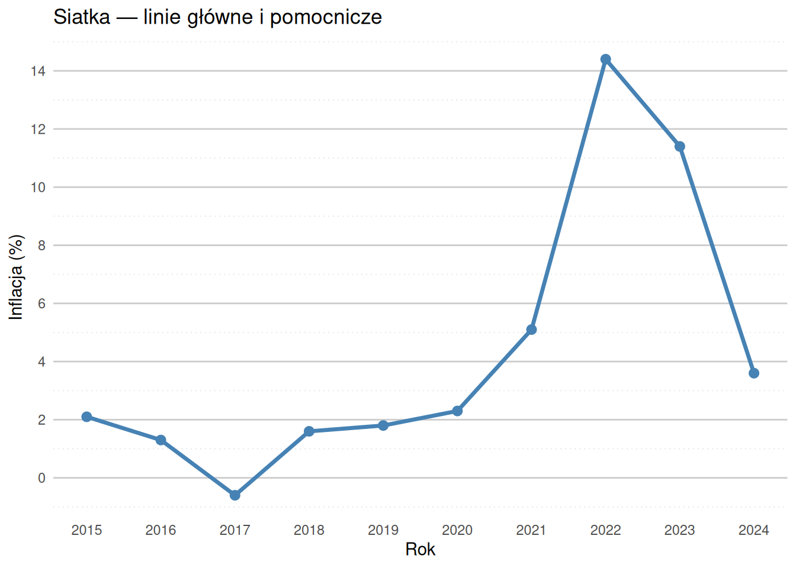
Tip
Dla wykresów liniowych z osią czasu zazwyczaj wystarczy tylko pozioma siatka — pionowe linie dla lat są zbędne i rozpraszają uwagę.
fig, axes = plt.subplots(1, 2, figsize=(10, 4))
for ax in axes:
ax.plot(dane["rok"], dane["inflacja"],
color="steelblue", linewidth=1.5, marker="o", markersize=4)
ax.set_xlabel("Rok"); ax.set_ylabel("Inflacja (%)")
ax.set_xticks(range(2015, 2025))
# Lewy — pełna siatka (główna i pomocnicza)
axes[0].set_title("Pełna siatka")
axes[0].grid(True, which="major", color="gray", linewidth=0.6, alpha=0.7)
axes[0].yaxis.set_minor_locator(mticker.AutoMinorLocator(2))
axes[0].grid(True, which="minor", color="lightgray",
linewidth=0.3, linestyle="dotted")
# Prawy — tylko pozioma siatka główna
axes[1].set_title("Tylko pozioma siatka główna")
axes[1].grid(True, axis="y", which="major",
color="gray", linewidth=0.6, alpha=0.7)
axes[1].grid(False, axis="x")
plt.tight_layout(); plt.show()9.6 Skale kolorów
Kolory pełnią w wizualizacji danych dwie różne funkcje: identyfikują kategorie (zmienne jakościowe) lub kodują wartości (zmienne ilościowe). Dobór palety powinien być świadomy.
Kolory dla zmiennych jakościowych
Aby przypisać konkretne kolory do kategorii, używamy funkcji scale_fill_manual() (dla wykresów słupkowych) lub scale_color_manual() (dla wykresów liniowych). Możemy ręcznie przypisać kolory do każdej kategorii, co daje pełną kontrolę nad wyglądem wykresu. Alternatywnie, można skorzystać z gotowych palet kolorów, takich jak te dostępne w pakiecie RColorBrewer, które są zaprojektowane tak, aby były estetyczne i czytelne, nawet dla osób z zaburzeniami widzenia barw. W obu przypadkach ważne jest, aby tytuł legendy był spójny dla wszystkich estetyk (np. color i linetype), co pozwala na połączenie ich w jedną legendę.
# Ręczne przypisanie kolorów — pełna kontrola
ggplot(wydatki, aes(x = reorder(kategoria, procent_PKB),
y = procent_PKB, fill = region)) +
geom_col(width = 0.7) +
coord_flip() +
# Manualne kolory + własne etykiety legendy
scale_fill_manual(
values = c(
"Społeczne" = "#1f77b4",
"Obrona" = "#d62728",
"Infrastruktura" = "#2ca02c",
"Administracja" = "#ff7f0e"
),
name = "Kategoria wydatku"
) +
labs(title = "Wydatki publiczne według kategorii",
x = NULL, y = "% PKB") +
theme_minimal()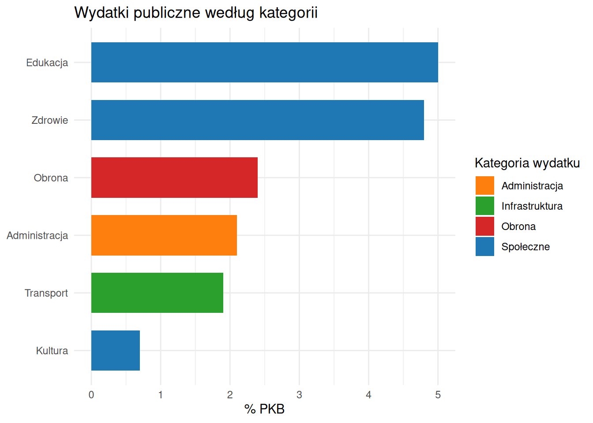
# Gotowe palety — ColorBrewer (polecane, odporne na ślepotę barw)
ggplot(wydatki, aes(x = reorder(kategoria, procent_PKB),
y = procent_PKB, fill = region)) +
geom_col(width = 0.7) + coord_flip() +
scale_fill_brewer(palette = "Set2", name = "Kategoria") +
labs(title = "Paleta ColorBrewer: Set2",
x = NULL, y = "% PKB") +
theme_minimal()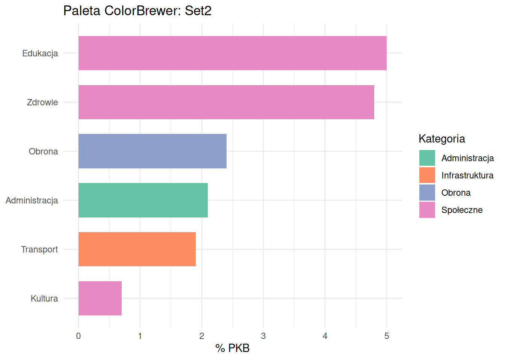
fig, axes = plt.subplots(1, 2, figsize=(10, 4))
sns.set_style("whitegrid")
paleta = {
"Społeczne": "#1f77b4",
"Obrona": "#d62728",
"Infrastruktura": "#2ca02c",
"Administracja": "#ff7f0e"
}
# Lewy — manualne kolory
wyd_sort = wydatki.sort_values("procent_PKB")
kolory = [paleta[r] for r in wyd_sort["region"]]
bars = axes[0].barh(wyd_sort["kategoria"], wyd_sort["procent_PKB"],
color=kolory, height=0.7)
axes[0].set_title("Manualne kolory")
axes[0].set_xlabel("% PKB")
# Legenda manualna
import matplotlib.patches as mpatches
handles = [mpatches.Patch(color=v, label=k) for k, v in paleta.items()]
axes[0].legend(handles=handles, title="Kategoria", fontsize=8)
# Prawy — paleta seaborn (ColorBrewer)
sns.barplot(data=wydatki.sort_values("procent_PKB"),
y="kategoria", x="procent_PKB", hue="region",
palette="Set2", ax=axes[1], orient="h")
axes[1].set_title("Paleta ColorBrewer: Set2")
axes[1].set_xlabel("% PKB"); axes[1].set_ylabel(None)
axes[1].legend(title="Kategoria", fontsize=8)
plt.tight_layout(); plt.show()Kolory dla zmiennych ilościowych
Kolorowanie punktów lub linii na wykresie liniowym może służyć do kodowania wartości zmiennej ilościowej (np. inflacji) — im wyższa wartość, tym bardziej intensywny kolor. W ggplot2 można to osiągnąć przez przypisanie zmiennej do estetyki color i użycie funkcji scale_color_gradient() (dla sekwencyjnej) lub scale_color_gradient2() (dla dywergentnej). Paleta sekwencyjna jest odpowiednia dla danych, które mają naturalny porządek (np. od niskich do wysokich wartości), natomiast paleta dywergentna jest idealna dla danych, które mają punkt centralny (np. 0 lub średnia) i chcemy pokazać odchylenia w obie strony.
# Paleta sekwencyjna — dla danych od niskich do wysokich wartości
ggplot(dane, aes(x = rok, y = inflacja, color = inflacja)) +
geom_point(size = 5) +
geom_line(color = "gray70", linewidth = 0.8) +
# Sekwencyjna: od jasnego (niska inflacja) do ciemnego (wysoka)
scale_color_gradient(
low = "#fff7bc",
high = "#d62728",
name = "Inflacja (%)"
) +
labs(title = "Inflacja — paleta sekwencyjna",
x = "Rok", y = "Inflacja (%)") +
theme_minimal()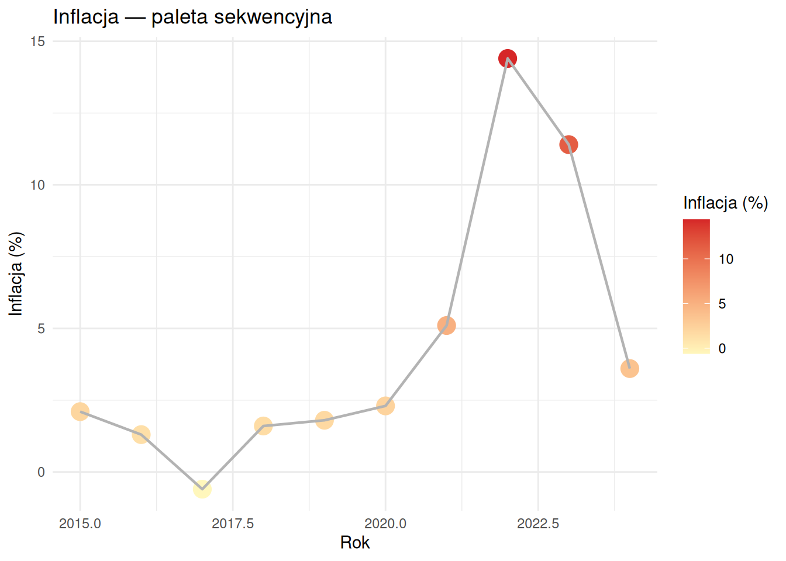
# Paleta dywergentna — dla danych z centrum (0 lub średnia)
ggplot(dane, aes(x = rok, y = inflacja,
color = inflacja - mean(inflacja))) +
geom_point(size = 5) +
geom_line(color = "gray70", linewidth = 0.8) +
# Dywergentna: niebieski (poniżej średniej) → biały → czerwony (powyżej)
scale_color_gradient2(
low = "#1f77b4",
mid = "white",
high = "#d62728",
midpoint = mean(dane$inflacja),
name = "Odchylenie\nod średniej"
) +
labs(title = "Inflacja — paleta dywergentna\n(odchylenie od średniej)",
x = "Rok", y = "Inflacja (%)") +
theme_minimal()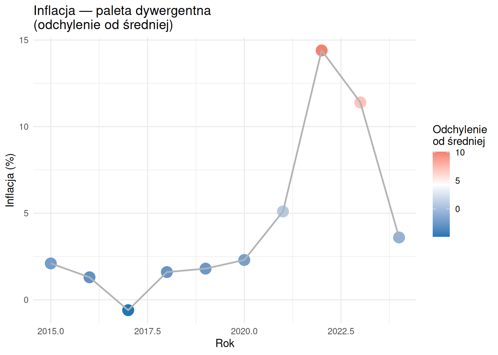
fig, axes = plt.subplots(1, 2, figsize=(10, 4))
sns.set_style("whitegrid")
# Sekwencyjna — normalizacja wartości do [0, 1] dla colormap
from matplotlib.colors import Normalize
from matplotlib.cm import ScalarMappable
infl = dane["inflacja"].values
norm_seq = Normalize(vmin=infl.min(), vmax=infl.max())
cmap_seq = plt.cm.YlOrRd
# Lewy — sekwencyjna
axes[0].plot(dane["rok"], infl, color="lightgray", linewidth=0.8, zorder=1)
sc0 = axes[0].scatter(dane["rok"], infl,
c=infl, cmap=cmap_seq, s=80, zorder=2)
fig.colorbar(sc0, ax=axes[0], label="Inflacja (%)")
axes[0].set_title("Paleta sekwencyjna")
axes[0].set_xlabel("Rok"); axes[0].set_ylabel("Inflacja (%)")
# Dywergentna — centrum = średnia
odchylenie = infl - infl.mean()
norm_div = Normalize(vmin=odchylenie.min(), vmax=odchylenie.max())
cmap_div = plt.cm.RdBu_r
axes[1].plot(dane["rok"], infl, color="lightgray", linewidth=0.8, zorder=1)
sc1 = axes[1].scatter(dane["rok"], infl,
c=odchylenie, cmap=cmap_div, norm=norm_div, s=80, zorder=2)
fig.colorbar(sc1, ax=axes[1], label="Odchylenie od średniej")
axes[1].set_title("Paleta dywergentna\n(odchylenie od średniej)")
axes[1].set_xlabel("Rok"); axes[1].set_ylabel("Inflacja (%)")
plt.tight_layout(); plt.show()
ImportantŚlepota barw — dobieraj kolory świadomie
Około 8% mężczyzn i 0.5% kobiet ma zaburzenia widzenia barw (najczęściej red-green, czyli trudność z rozróżnianiem czerwonego i zielonego). Zasady bezpiecznego doboru kolorów:
- unikaj zestawienia czerwony + zielony jako głównych kolorów różnicujących,
- używaj palet ColorBrewer (
Set2,Dark2) — są zaprojektowane z myślą o dostępności, - dodawaj do koloru drugi kanał informacji: kształt punktu, typ linii (przerywana/ciągła),
- testuj: colorbrewer2.org pozwala filtrować palety pod kątem ślepoty barw.
9.7 Adnotacje
Adnotacja to tekst lub kształt nałożony na wykres w konkretnym miejscu danych. Pozwala zwrócić uwagę na kluczowe zdarzenie lub wartość bez konieczności opisywania go oddzielnie. Strzałki mogą wskazywać konkretny punkt danych, a prostokąty mogą zaznaczać obszar na wykresie. Dobrze zaprojektowane adnotacje pomagają odbiorcy szybko zidentyfikować kluczowe informacje i zrozumieć kontekst danych.
Biblioteka ggplot2 oferuje funkcję annotate(), która umożliwia dodanie różnych typów adnotacji: tekstu, strzałek, prostokątów, linii. Adnotacje są umieszczane na wykresie w określonych współrzędnych (x, y) i mogą być formatowane pod względem rozmiaru, koloru, położenia względem punktu (hjust, vjust).
ggplot(dane, aes(x = rok, y = inflacja)) +
geom_line(color = "steelblue", linewidth = 1.2) +
geom_point(color = "steelblue", size = 2.5) +
# Adnotacja tekstowa — dla konkretnego punktu danych
annotate("text",
x = 2021.7, y = 14.4,
label = "Szczyt inflacji\n14,4% (2022)",
hjust = 1.1, vjust = 1.5,
size = 3.2, color = "#d62728") +
# Strzałka wskazująca punkt
annotate("segment",
x = 2021.7, xend = 2022,
y = 14.0, yend = 14.4,
arrow = arrow(length = unit(0.2, "cm")),
color = "#d62728", linewidth = 0.6) +
# Prostokąt zaznaczający okres
annotate("rect",
xmin = 2021.5, xmax = 2023.5,
ymin = -2, ymax = 16,
alpha = 0.08, fill = "#d62728") +
annotate("text",
x = 2022.5, y = -1.5,
label = "Okres\nwysokiej inflacji",
size = 2.8, color = "#d62728") +
scale_y_continuous(limits = c(-2, 16)) +
labs(title = "Inflacja w Polsce — adnotacje na wykresie",
x = "Rok", y = "Inflacja (%)") +
theme_classic()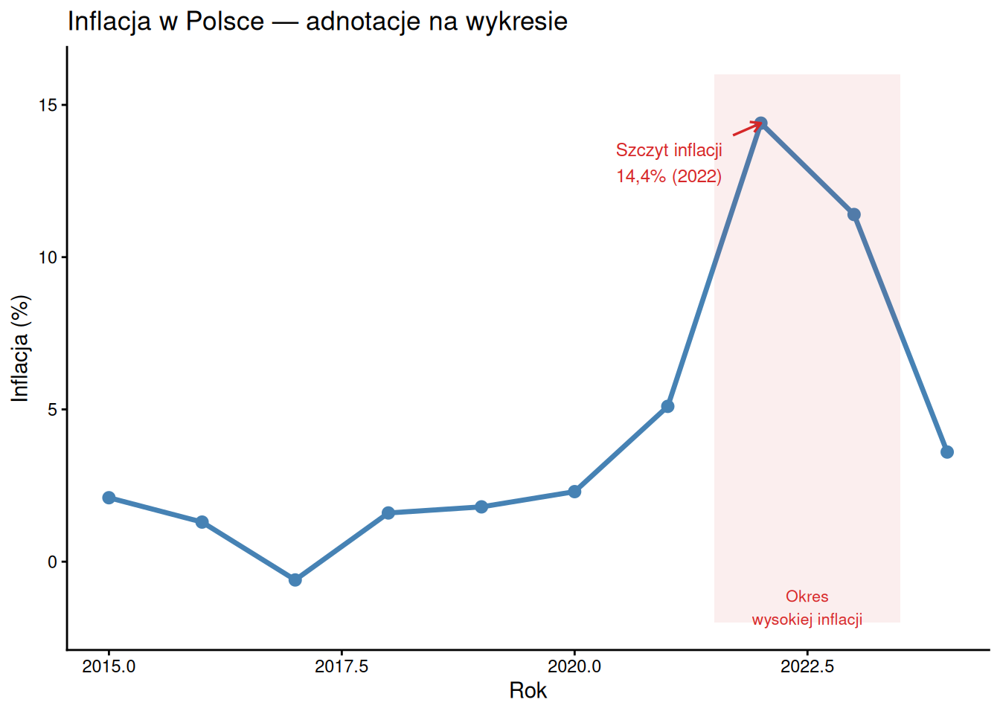
sns.set_style("whitegrid")
fig, ax = plt.subplots(figsize=(9, 5))
ax.plot(dane["rok"], dane["inflacja"],
color="steelblue", linewidth=1.5, marker="o", markersize=5)
# Adnotacja tekstowa ze strzałką
ax.annotate(
"Szczyt inflacji\n14,4% (2022)",
xy = (2022, 14.4), # punkt wskazywany
xytext = (2020.5, 13.5), # pozycja tekstu
fontsize = 9,
color = "#d62728",
arrowprops = dict(
arrowstyle = "->",
color = "#d62728",
lw = 1.2
)
)
# Prostokąt zaznaczający okres
ax.axvspan(2021.5, 2023.5, alpha=0.08, color="#d62728", zorder=0)
ax.text(2022.5, -1.5, "Okres\nwysokie inflacji",
ha="center", fontsize=8, color="#d62728")
ax.set_ylim(-2, 16)
ax.set_xlabel("Rok", fontsize=11)
ax.set_ylabel("Inflacja (%)", fontsize=11)
ax.set_title("Inflacja w Polsce — adnotacje na wykresie",
fontsize=13, fontweight="bold")
plt.tight_layout(); plt.show()9.8 Linie referencyjne
Linie referencyjne — poziome i pionowe — pomagają odczytać gdzie dane przekraczają istotny próg: średnią, cel inflacyjny, poziom bazowy, datę zdarzenia. Dobrze oznaczone linie referencyjne ułatwiają interpretację wykresu i podkreślają kluczowe informacje bez konieczności dodawania dodatkowego tekstu czy siatki (której często się unika).
Aby dodać linię referencyjną w ggplot2, używamy funkcji geom_hline() (dla linii poziomej) lub geom_vline() (dla linii pionowej). Możemy ustawić jej położenie (yintercept lub xintercept), kolor, grubość i styl (ciągła, przerywana, kropkowana). Dodatkowo, warto dodać adnotację tekstową obok linii, aby jasno wskazać co ona reprezentuje (np. “Cel inflacyjny”, “Średnia z okresu”, “Pandemia COVID-19”).
cel_inflacyjny <- 2.5 # cel NBP: 2,5% ± 1 pp
srednia_infl <- mean(dane$inflacja)
ggplot(dane, aes(x = rok, y = inflacja)) +
geom_line(color = "steelblue", linewidth = 1.2) +
geom_point(color = "steelblue", size = 2.5) +
# Pasmo dopuszczalnych odchyleń (cel ± 1 pp)
annotate("rect",
xmin = -Inf, xmax = Inf,
ymin = cel_inflacyjny - 1,
ymax = cel_inflacyjny + 1,
alpha = 0.12, fill = "#2ca02c") +
# Linia celu inflacyjnego — pozioma
geom_hline(yintercept = cel_inflacyjny,
color = "#2ca02c", linewidth = 0.9,
linetype = "dashed") +
# Linia średniej z okresu
geom_hline(yintercept = srednia_infl,
color = "gray40", linewidth = 0.8,
linetype = "dotted") +
# Linia pionowa — zdarzenie (pandemia)
geom_vline(xintercept = 2020,
color = "gray50", linewidth = 0.8,
linetype = "longdash") +
# Etykiety linii referencyjnych
annotate("text", x = 2015.2, y = cel_inflacyjny + 0.3,
label = "Cel NBP (2,5%)", hjust = 0,
size = 3, color = "#2ca02c") +
annotate("text", x = 2015.2, y = srednia_infl - 0.5,
label = paste0("Średnia: ", round(srednia_infl, 1), "%"),
hjust = 0, size = 3, color = "gray40") +
annotate("text", x = 2020.1, y = -1,
label = "Pandemia\nCOVID-19",
hjust = 0, size = 2.8, color = "gray50") +
labs(title = "Inflacja w Polsce a cel inflacyjny NBP",
x = "Rok", y = "Inflacja (%)") +
theme_classic()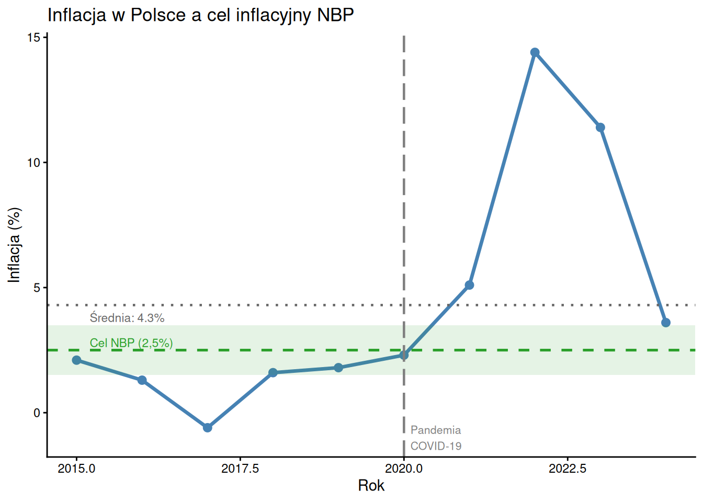
cel_inflacyjny = 2.5
srednia_infl = dane["inflacja"].mean()
sns.set_style("whitegrid")
fig, ax = plt.subplots(figsize=(9, 5))
ax.plot(dane["rok"], dane["inflacja"],
color="steelblue", linewidth=1.5, marker="o", markersize=5, zorder=3)
# Pasmo celu inflacyjnego
ax.axhspan(cel_inflacyjny - 1, cel_inflacyjny + 1,
alpha=0.12, color="#2ca02c", zorder=0)
# Linia celu inflacyjnego — pozioma
ax.axhline(cel_inflacyjny,
color="#2ca02c", linewidth=1.2, linestyle="dashed",
label=f"Cel NBP ({cel_inflacyjny}%)", zorder=2)
# Linia średniej
ax.axhline(srednia_infl,
color="gray", linewidth=0.9, linestyle="dotted",
label=f"Średnia: {srednia_infl:.1f}%", zorder=2)
# Linia pionowa — pandemia
ax.axvline(2020, color="gray", linewidth=0.9,
linestyle="dashdot", zorder=2)
ax.text(2020.1, ax.get_ylim()[0] + 0.3,
"Pandemia\nCOVID-19",
fontsize=8, color="gray", va="bottom")
ax.set_xlabel("Rok", fontsize=11)
ax.set_ylabel("Inflacja (%)", fontsize=11)
ax.set_title("Inflacja w Polsce a cel inflacyjny NBP",
fontsize=13, fontweight="bold")
ax.legend(fontsize=9, loc="upper left")
plt.tight_layout(); plt.show()9.9 Linia trendu i regresja
Linia trendu pomaga wychwycić ogólny kierunek zmian pomijając szumy krótkoterminowe. W analizie ekonomicznej najczęściej stosuje się regresję liniową lub wygładzanie lokalne (LOESS).
Biblioteka ggplot2 umożliwia dodanie linii trendu przez geom_smooth(), gdzie method = "lm" oznacza regresję liniową, a method = "loess" — wygładzanie lokalne. Regresja liniowa pokazuje ogólny kierunek zmian, a jej przedział ufności (wstęga) wskazuje na niepewność oszacowania. Wygładzanie LOESS jest bardziej elastyczne i może lepiej dopasować się do nieliniowych trendów, ale nie dostarcza formalnych testów statystycznych ani przedziałów ufności.
ggplot(dane, aes(x = rok, y = inflacja)) +
geom_point(color = "steelblue", size = 3) +
# Regresja liniowa z przedziałem ufności
geom_smooth(method = "glm", #"gam" jest alternatywą dla nieliniowych trendów
color = "#d62728",
fill = "#d62728",
alpha = 0.15,
se = TRUE, # pokaż przedział ufności
linewidth = 1) +
# Wygładzanie LOESS — lokalnie ważona regresja
geom_smooth(method = "loess",
span = 0.75, # stopień wygładzania (0–1)
color = "#2ca02c",
fill = "#2ca02c",
alpha = 0.1,
se = FALSE,
linewidth = 1,
linetype = "dashed") +
annotate("text", x = 2023, y = 4,
label = "Regresja\nliniowa", color = "#d62728",
size = 3, hjust = 0) +
annotate("text", x = 2023, y = 8.5,
label = "LOESS", color = "#2ca02c",
size = 3, hjust = 0) +
labs(title = "Trend inflacji — regresja liniowa vs LOESS",
subtitle = "Wstęga = 95% przedział ufności (tylko dla regresji liniowej)",
x = "Rok", y = "Inflacja (%)") +
coord_cartesian(xlim = c(2015, 2025)) +
theme_minimal()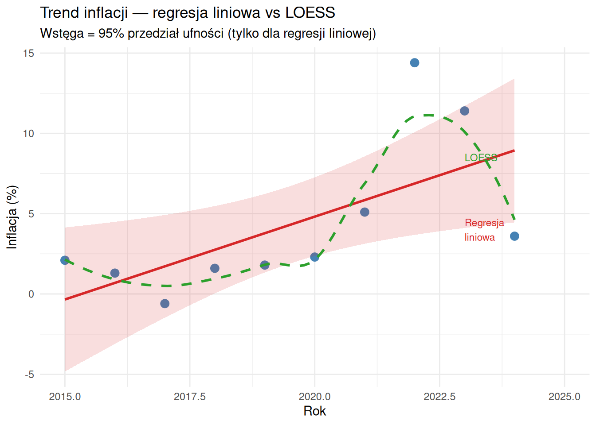
library(ggpmisc) # dla stat_poly_eq()
# Wykres rozrzutu z linią regresji
ggplot(dane, aes(x = bezrobocie, y = inflacja)) +
geom_point(color = "steelblue", size = 3) +
geom_smooth(method = "lm", formula = y ~ poly(x, 2)) +
stat_poly_eq(
formula = y ~ poly(x, 2),
aes(label = paste(after_stat(eq.label), after_stat(rr.label), sep = "~~~")),
parse = TRUE,
size = 4, label.x = 0.95, label.y = 0.40, color = "rgb(62, 102, 222)"
) +
geom_text(aes(label = rok), nudge_y = 0.5,
size = 2.8, color = "gray40") +
labs(title = "Krzywa Phillipsa — Polska 2015–2024",
subtitle = "Zależność między bezrobociem a inflacją",
x = "Stopa bezrobocia (%)",
y = "Inflacja (%)",
caption = "Źródło: GUS | Dane ilustracyjne") +
theme_minimal()from scipy import stats
sns.set_style("whitegrid")
fig, axes = plt.subplots(1, 2, figsize=(11, 4.5))
# Lewy — regresja liniowa z przedziałem ufności
x = dane["rok"].values
y = dane["inflacja"].values
slope, intercept, r, p, se = stats.linregress(x, y)
y_pred = slope * x + intercept
# Przedział ufności metodą bootstrap (uproszczony)
n = len(x)
t_cv = 2.306 # t-krytyczne dla 95% CI, df=8
ci = t_cv * se * np.sqrt(1/n + (x - x.mean())**2 /
((x - x.mean())**2).sum())
axes[0].scatter(x, y, color="steelblue", s=60, zorder=3)
axes[0].plot(x, y_pred, color="#d62728", linewidth=1.5,
label=f"Regresja liniowa (R²={r**2:.2f})", zorder=2)
axes[0].fill_between(x, y_pred - ci, y_pred + ci,
color="#d62728", alpha=0.15,
label="95% CI", zorder=1)
# LOESS — przez scipy (uproszczony)
from scipy.ndimage import uniform_filter1d
idx_sort = np.argsort(x)
x_s = x[idx_sort]
y_s = uniform_filter1d(y[idx_sort], size=3)
axes[0].plot(x_s, y_s, color="#2ca02c", linewidth=1.5,
linestyle="dashed", label="LOESS (uproszczony)")
axes[0].legend(fontsize=8)
axes[0].set_title("Trend inflacji — regresja liniowa vs LOESS", fontsize=9)
axes[0].set_xlabel("Rok"); axes[0].set_ylabel("Inflacja (%)")
# Prawy — krzywa Phillipsa
bx = dane["bezrobocie"].values
by = dane["inflacja"].values
slope2, intercept2, r2, _, se2 = stats.linregress(bx, by)
x_fit = np.linspace(bx.min(), bx.max(), 100)
y_fit = slope2 * x_fit + intercept2
axes[1].scatter(bx, by, color="steelblue", s=60, zorder=3)
axes[1].plot(x_fit, y_fit, color="#d62728", linewidth=1.5,
label=f"Regresja (R²={r2**2:.2f})", zorder=2)
for rok, bxi, byi in zip(dane["rok"].values, bx, by):
axes[1].annotate(str(rok), (bxi, byi),
textcoords="offset points", xytext=(5, 3), fontsize=7)
axes[1].legend(fontsize=8)
axes[1].set_title("Krzywa Phillipsa — Polska 2015–2024", fontsize=9)
axes[1].set_xlabel("Stopa bezrobocia (%)")
axes[1].set_ylabel("Inflacja (%)")
plt.tight_layout(); plt.show()9.10 Zapis wykresu do pliku
Gotowy wykres warto zapisać do pliku — zarówno dla raportu (PDF, PNG wysokiej rozdzielczości) jak i dla prezentacji (PNG, SVG).
# Najpierw utwórz wykres i przypisz do zmiennej
p <- ggplot(dane, aes(x = rok, y = inflacja)) +
geom_line(color = "steelblue", linewidth = 1.2) +
geom_point(color = "steelblue", size = 2.5) +
labs(title = "Inflacja w Polsce",
x = "Rok", y = "Inflacja (%)") +
theme_minimal()
# Zapis — ggsave() zawsze zapisuje ostatni wyświetlony wykres
# lub wykres podany w argumencie plot=
# PNG — do prezentacji i stron internetowych
ggsave(
filename = "inflacja.png",
plot = p,
width = 9, # szerokość w calach
height = 5, # wysokość w calach
dpi = 300 # rozdzielczość: 300 dpi = jakość drukarska
)
# PDF — do raportów (format wektorowy — bez pikselizacji przy skalowaniu)
ggsave("inflacja.pdf", plot = p, width = 9, height = 5)
# SVG — do stron internetowych (format wektorowy)
ggsave("inflacja.svg", plot = p, width = 9, height = 5)
Tip
Zasada DPI (dot per inch):
- 72–96 dpi — strony internetowe, ekran,
- 150 dpi — wydruk normalny,
- 300 dpi — wydruk wysokiej jakości (artykuły, plakaty).
# Najpierw utwórz wykres
fig, ax = plt.subplots(figsize=(9, 5)) # figsize w calach
ax.plot(dane["rok"], dane["inflacja"],
color="steelblue", linewidth=1.5, marker="o", markersize=5)
ax.set_title("Inflacja w Polsce", fontsize=13, fontweight="bold")
ax.set_xlabel("Rok"); ax.set_ylabel("Inflacja (%)")
sns.set_style("whitegrid")
plt.tight_layout()
# PNG — do prezentacji i stron internetowych
fig.savefig(
"inflacja.png",
dpi = 300, # rozdzielczość
bbox_inches = "tight", # nie obcinaj etykiet i tytułu
facecolor = "white" # białe tło (domyślnie przezroczyste)
)
# PDF — format wektorowy, idealny do raportów
fig.savefig("inflacja.pdf", bbox_inches="tight")
# SVG — format wektorowy do internetu
fig.savefig("inflacja.svg", bbox_inches="tight")
plt.show()
Tip
Zawsze dodawaj bbox_inches="tight" — bez tego matplotlib może przyciąć tytuły lub etykiety osi przy zapisie.
9.11 Kompletny przykład
Poniżej składamy wszystkie omówione elementy w jeden profesjonalny wykres gotowy do raportu.
cel <- 2.5
srednia <- mean(dane$inflacja)
ggplot(dane, aes(x = rok, y = inflacja)) +
# Pasmo celu inflacyjnego
annotate("rect",
xmin = -Inf, xmax = Inf,
ymin = cel - 1, ymax = cel + 1,
fill = "#2ca02c", alpha = 0.08) +
# Zaznaczenie okresu wysokiej inflacji
annotate("rect",
xmin = 2021.5, xmax = 2023.5,
ymin = -2, ymax = 16,
fill = "#d62728", alpha = 0.06) +
# Linie referencyjne
geom_hline(yintercept = cel,
color = "#2ca02c", linewidth = 0.8, linetype = "dashed") +
geom_hline(yintercept = srednia,
color = "gray50", linewidth = 0.7, linetype = "dotted") +
geom_vline(xintercept = 2020,
color = "gray60", linewidth = 0.7, linetype = "longdash") +
# Dane
geom_line(color = "steelblue", linewidth = 1.4) +
geom_point(aes(color = inflacja > 5), size = 3.5) +
scale_color_manual(values = c("FALSE" = "steelblue",
"TRUE" = "#d62728"),
guide = "none") +
# Adnotacje
annotate("text", x = 2015.3, y = cel + 0.35,
label = "Cel NBP: 2,5%", hjust = 0,
size = 3, color = "#2ca02c") +
annotate("text", x = 2015.3, y = srednia - 0.6,
label = paste0("Śr. okresu: ", round(srednia, 1), "%"),
hjust = 0, size = 3, color = "gray50") +
annotate("text", x = 2020.1, y = -1.5,
label = "COVID-19", hjust = 0,
size = 2.8, color = "gray55") +
annotate("text", x = 2022.5, y = 15.2,
label = "Kryzys\ninflacyjny",
hjust = 0.5, size = 3, color = "#d62728") +
# Skale
scale_x_continuous(breaks = 2015:2024) +
scale_y_continuous(
breaks = seq(-2, 16, by = 2),
limits = c(-2, 16),
labels = scales::label_number(suffix = "%")
) +
# Opisy
labs(
title = "Inflacja w Polsce w latach 2015–2024",
subtitle = paste0("Cel inflacyjny NBP: 2,5% (±1 pp) | ",
"Punkty czerwone = inflacja > 5%"),
caption = "Źródło: GUS, Główny Urząd Statystyczny | Dane ilustracyjne",
x = NULL,
y = "Inflacja (%, rok do roku)"
) +
# Motyw
theme_minimal(base_size = 11) +
theme(
plot.title = element_text(size = 14, face = "bold", hjust = 0),
plot.subtitle = element_text(size = 9, color = "gray40", hjust = 0),
plot.caption = element_text(size = 8, color = "gray55", hjust = 1),
panel.grid.major.x = element_blank(),
panel.grid.minor = element_blank()
)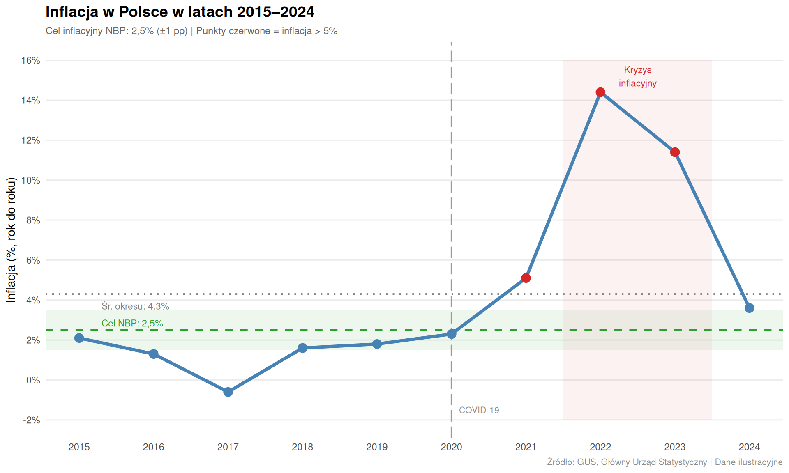
#| eval: false
import matplotlib.pyplot as plt
import matplotlib.ticker as mticker
import seaborn as sns
import numpy as np
sns.set_style("whitegrid")
sns.set_context("notebook")
cel = 2.5
srednia = dane["inflacja"].mean()
fig, ax = plt.subplots(figsize=(10, 6))
# Pasma i tło
ax.axhspan(cel - 1, cel + 1, alpha=0.08, color="#2ca02c", zorder=0)
ax.axvspan(2021.5, 2023.5, alpha=0.06, color="#d62728", zorder=0)
# Linie referencyjne
ax.axhline(cel, color="#2ca02c", linewidth=0.9,
linestyle="dashed", zorder=1)
ax.axhline(srednia, color="gray", linewidth=0.8,
linestyle="dotted", zorder=1)
ax.axvline(2020, color="gray", linewidth=0.8,
linestyle="dashdot", zorder=1)
# Dane — kolor zależy od wartości
kolory = ["#d62728" if v > 5 else "steelblue"
for v in dane["inflacja"]]
ax.plot(dane["rok"], dane["inflacja"],
color="steelblue", linewidth=1.5, zorder=2)
ax.scatter(dane["rok"], dane["inflacja"],
color=kolory, s=60, zorder=3)
# Adnotacje
ax.text(2015.2, cel + 0.4,
"Cel NBP: 2,5%", fontsize=8, color="#2ca02c")
ax.text(2015.2, srednia - 0.7,
f"Śr. okresu: {srednia:.1f}%", fontsize=8, color="gray")
ax.text(2020.1, -1.6, "COVID-19", fontsize=8, color="gray55")
ax.text(2022.5, 15.3, "Kryzys\ninflacyjny",
ha="center", fontsize=8, color="#d62728")
# Skale i formatowanie
ax.set_xlim(2014.5, 2024.5)
ax.set_ylim(-2, 16)
ax.set_xticks(range(2015, 2025))
ax.set_yticks(range(-2, 17, 2))
ax.yaxis.set_major_formatter(
mticker.FuncFormatter(lambda x, _: f"{x:.0f}%")
)
# Opisy
ax.set_title("Inflacja w Polsce w latach 2015–2024",
fontsize=14, fontweight="bold", loc="left", pad=20)
ax.text(0, 1.02,
f"Cel inflacyjny NBP: 2,5% (±1 pp) | Punkty czerwone = inflacja > 5%",
transform=ax.transAxes, fontsize=9, color="gray", va="bottom")
fig.text(0.99, -0.04,
"Źródło: GUS | Dane ilustracyjne",
ha="right", fontsize=8, color="gray55")
ax.set_xlabel(None)
ax.set_ylabel("Inflacja (%, rok do roku)", fontsize=11)
ax.grid(axis="x", visible=False)
ax.grid(axis="y", which="minor", visible=False)
plt.tight_layout()
# Zapis do pliku
fig.savefig("inflacja_kompletny.png", dpi=300,
bbox_inches="tight", facecolor="white")
plt.show()